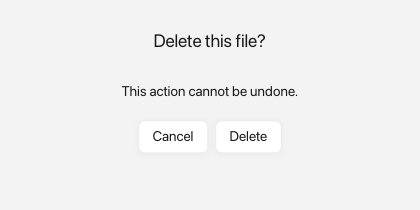

Dialogs
A dialog is a small modal window that asks the user to make a decision. The call that shows it waits until the user answers.

A confirmation dialog with two buttons.
What it's for
Use a dialog when you need an answer before the rest of your code continues, such as confirming a delete or asking whether to save changes. "Modal" means the dialog sits in front of the main window and must be dealt with first.
Fluffy can show a dialog with preset buttons, with labels you supply, or with
rich Inline buttons and messages that include icons and colors. An Inline is
rich text built from plain text, an icon from Icons::*, and a Color.
Window::showDialog returns a typed DialogChoice that tells you which button
was clicked.
A first example
A window is the operating-system window your app draws into. Window::open
creates it, and if (!win) stops the program if the window could not be opened.
win.add<T>(...) creates a widget inside that window and returns a
reference to it. Rect{x, y, width, height} places the widget. A callback is a
small function you give to a widget so it can call you back when something
happens.
#include <cstdio>
#include <fluffy/fluffy.hpp>
int main() {
fluffy::Window win = fluffy::Window::open("Dialog demo", 640, 400);
if (!win) return 1;
auto& btn = win.add<fluffy::Button>("Delete…");
btn.setBounds(fluffy::Rect{40, 40, 140, 40});
btn.onClick([&win] {
auto answer = win.showDialog("Confirm", "Are you sure?", {"Yes", "No"});
if (answer == fluffy::Window::DialogChoice::First) {
std::printf("proceeding\n");
}
});
win.run();
}
showDialog takes a title, a message, and a list of button labels. It waits
while the dialog is open, so the code after it runs only once the user answers.
DialogChoice::First, Second, and Third index the button list: First
means the user clicked "Yes" here. DialogChoice::Dismissed means the user
pressed Escape or closed the dialog without choosing.
The snippets below assume win from this example.
Common tasks
Use preset button sets
auto answer = win.showDialog(
"Delete file", "Delete report.txt?", fluffy::Window::DialogButtons::OkCancel);
The preset sets are Ok, OkCancel, YesNo, and YesNoCancel. The typed
answer indexes the preset's buttons in order: First is OK or Yes,
Second is Cancel or No, and Third is Cancel in the three-button set.
If the user dismisses the dialog with Escape or the close button, showDialog
returns DialogChoice::Dismissed.
Provide custom button labels
auto answer = win.showDialog(
"Save changes?",
fluffy::Inline{} << "You have unsaved edits.",
std::vector<fluffy::Inline>{
fluffy::Inline{} << "Save",
fluffy::Inline{} << "Discard",
fluffy::Inline{} << "Cancel"});
Use the vector<Inline> overload when you want your own labels. The third
argument supplies the buttons in order.
Add icons to buttons
auto answer = win.showDialog(
"Confirm",
"Erase everything?",
std::vector<fluffy::Inline>{
fluffy::$(fluffy::Icons::trash << " Erase"),
fluffy::$(fluffy::Icons::x << " Cancel")
});
fluffy::$(...) is a shorthand that starts an Inline stream, so
fluffy::$(fluffy::Icons::trash << " Erase") means "an icon followed by the
text Erase". The answer is the button's position, so icons do not affect it.
Show an icon with a colored message
win.showDialog(
"Warning",
fluffy::$(fluffy::Icons::alert_triangle
<< " This cannot be undone."),
std::vector<fluffy::Inline>{
fluffy::$(fluffy::Icons::check << " Yes"),
fluffy::$(fluffy::Icons::x << " No")
});
The rich-message overload takes an Inline as the message, so you can compose
an icon and colored text for the body as well as for the buttons.
Good to know
- The parent window cannot be closed while the dialog is open.
- Pressing Escape or the close button dismisses the dialog and returns
DialogChoice::Dismissed. - The call is blocking: code after
showDialogruns only after the dialog closes. - Dialogs have a fixed size of 380×180 pixels.
- On WebAssembly there is no second native window. Dialogs fall back to the
browser's
alertandconfirm, and a dialog with three or more buttons returnsDialogChoice::First.
Quick reference
Window::showDialog
Overloads: (title, message, DialogButtons), (title, message, vector<string>),
(title, message, vector<Inline>) and (title, Inline, vector<Inline>).
Returns DialogChoice::First / Second / Third to index the button list;
Dismissed means Escape/close without choosing. Fixed at 380×180.
Window::DialogButtons
fluffy::Window::DialogButtons::Ok;
fluffy::Window::DialogButtons::OkCancel;
fluffy::Window::DialogButtons::YesNo;
fluffy::Window::DialogButtons::YesNoCancel;